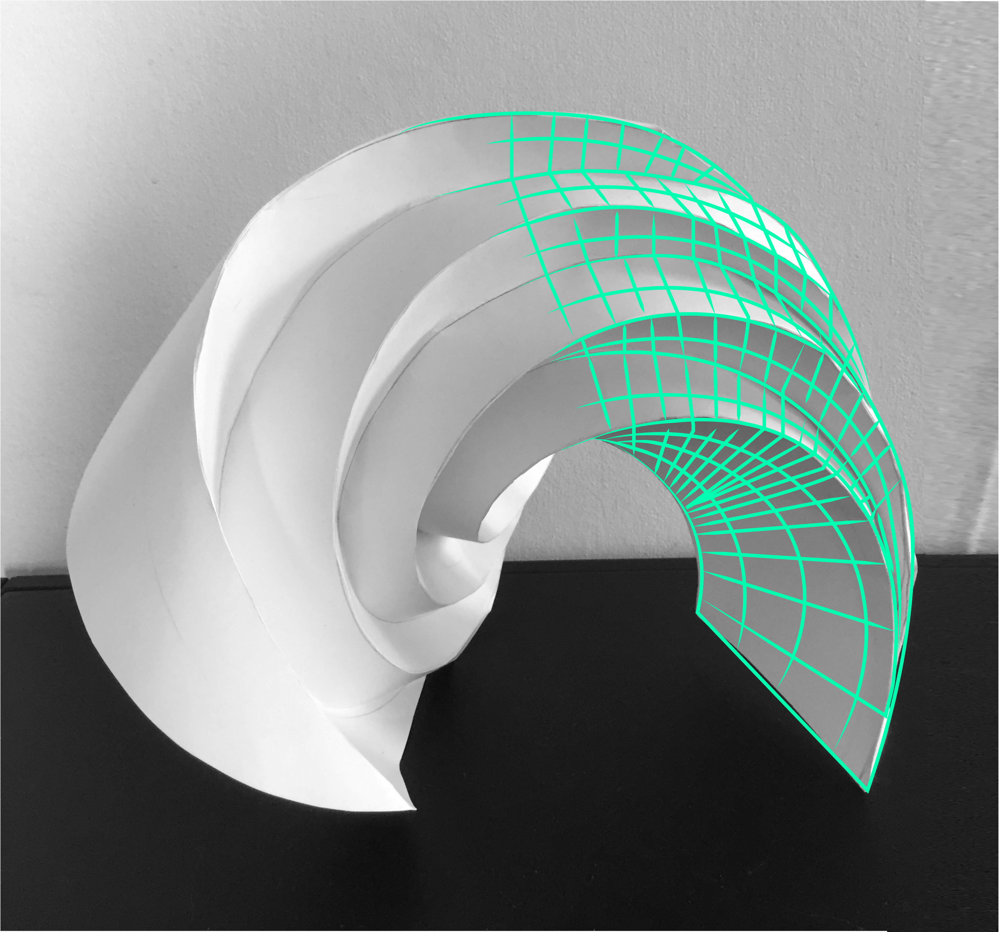
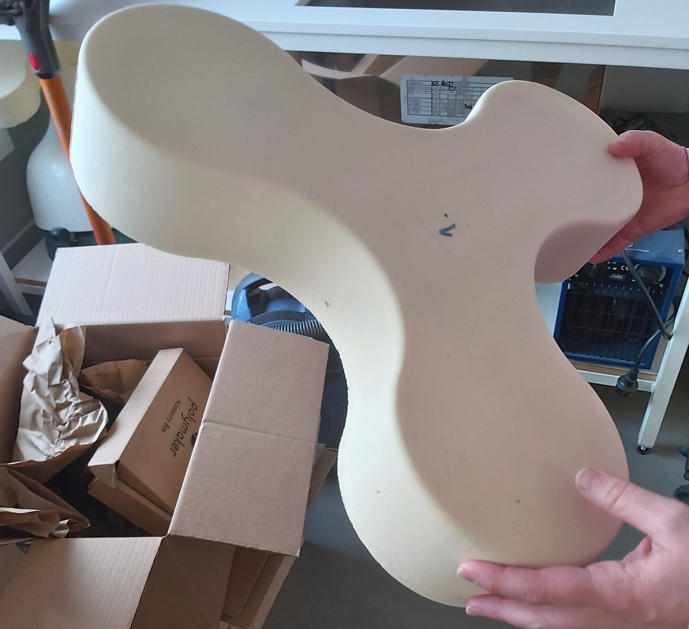
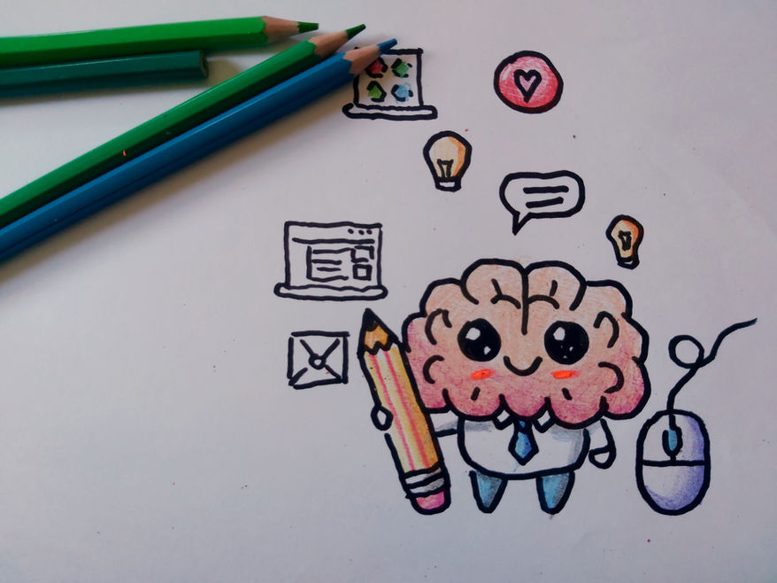

Academic & Research

Physical + Digital Integration
My doctoral research explored the interface between physical and digital realms, revealing how conventional practices can inform technological progress.
Read More
Contextual Interviews: Creativity in the Digital Era
This study examined how design practitioners use physical and digital tools during early design phases for modern idea generation techniques.
Read More
Exploratory Workshop
During my first year of Ph.D., I led an experimental co-design workshop with Master's students at SiDer 2018 conference.
Read More
Interactive VR Experiences
During my Master's project, I developed VR experiences with non-linear shapes. This process was enjoyable and deepened my understanding of sensory modalities and digital interactions.
Read More
Online Portfolio
Designing this website was a refreshing and exciting opportunity for me to reconnect with my design roots, from conceptualizing the design to finalizing the website.
Read More